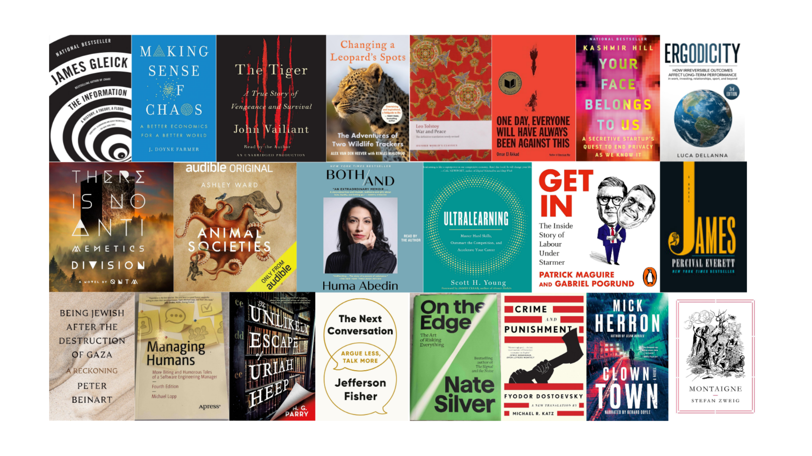
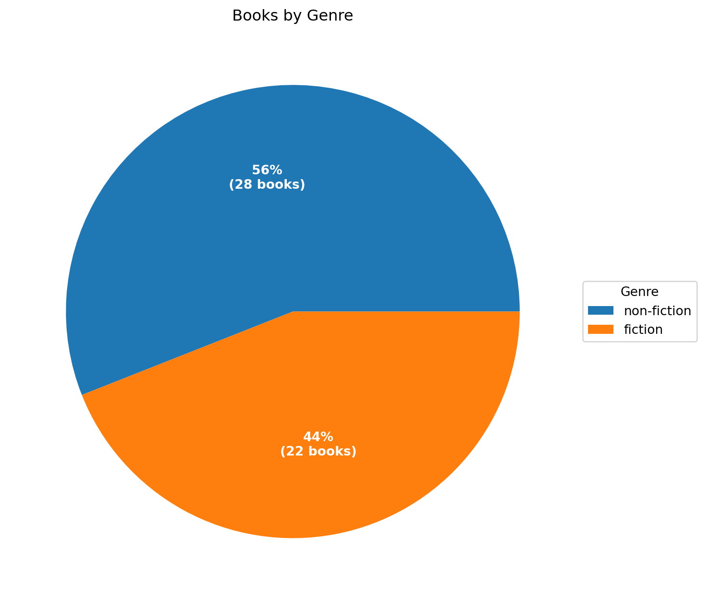
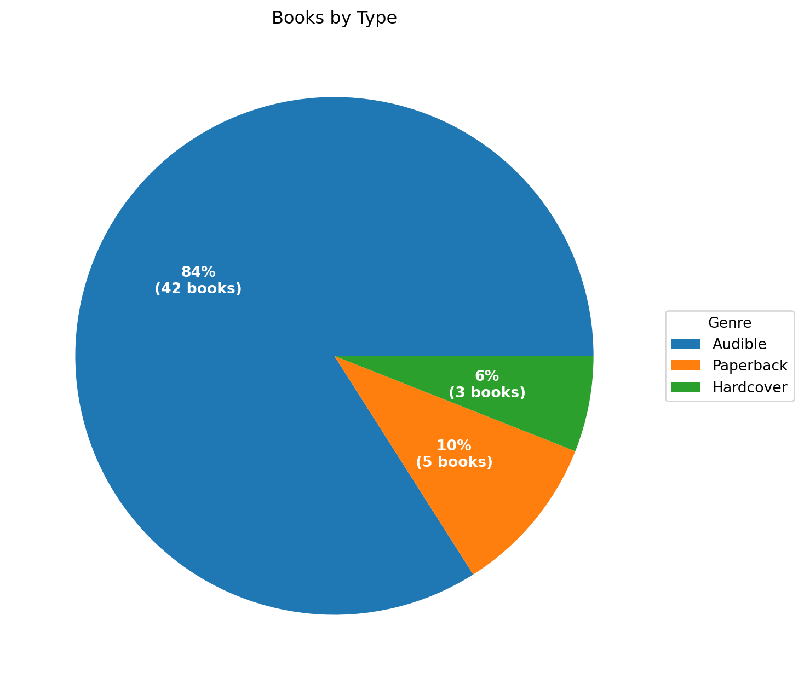

| Loading ITables v2.6.1 from the internet... (need help?) |
What I read in 2025
books
lists

Jump straight to the list of all 50 books here, otherwise keep reading for the highlights.
You can find previous years lists here.
Non-Fiction Recommendation
The Information: A History, A Theory, A Flood by James Gleick was my stand out non-fiction read of 2025. Despite being published back in 2011, it feels super relevant today as large language models take over the world. This book is about the essence of language - the information coveyed by words or other codes. As the subtitle conveys, the book is a history of how humans have conveyed information to each other, leading to an exposition of Claude Shannon’s Information Theory, and ending with a discussion of the flood of information brought about by the internet age. I would love to read a follow up by Gleick on the new world of LLMs and Generative AI.
The following quote from the book’s epilogue feels almost prophetic:
We are all patrons of the Library of Babel now, and we are the librarians, too. We veer from elation to dismay and back. “When it was proclaimed that the Library contained all books,” Borges tells us, “the first impression was one of extravagant happiness. All men felt themselves to be the masters of an intact and secret treasure. There was no personal or world problem whose eloquent solution did not exist in some hexagon. The universe was justified.” Then come the lamentations. What good are the precious books that cannot be found? What good is complete knowledge, in its immobile perfection? Borges worries: “The certitude that everything has been written negates us or turns us into phantoms.”
An honorable mention goes to Making Sense of Chaos: A Better Economics for a Better World by J. Doyne Farmer in which the author argues for the new paradigm of Complexity Economics that uses simulation to model the economy. It’s partly a discussion on how classical economics models have failed and how new agent-based models can do a better job, and partly a memoir of Farmer’s journey through the fields of chaos theory and complex systems.
Fiction Recommendation
I stumbled across There is no Antimemetics Division by a writer with the pseudonym qntm. The book has one of the most innovative basic premises I’ve come across in a long time. It had my attention from the first chapter with its mind-bending portrayal of a world where humans battle anti-memes, entities which can erase themselves from human memory. It turns out it’s quite complicated to fight entities that can make you forget they even exist! Highly recommended if you are a sci-fi fan.
Honorable mentions go to The Unlikely Escape of Uriah Heep by H.G. Parry which also had an intriguing premise - that it is possible to read characters out of a book and into existence. If you like Dickens and other Victorian-era authors like Arthur Conan Doyle, I’m sure you will enjoy this novel.
A final honorable mention to James by Percival Everett which re-imagines the Adventures of Huckleberry Finn through the eyes of the runaway slave, Jim.
The Animal Kingdom
One of my most memorable experiences of 2025 was visiting the Kruger National Park in South Africa and tracking Lions with the renowned tracker Renias Mhlongo, one of the most charismatic, talented and genuinely nice persons I’ve had the pleasure of meeting. Changing a Leopard’s Spots: The Adventures of Two Wildlife Trackers by Alex Van Den Heever is the story of how Alex and Renias bonded as a guide and tracker team in the Londolozi Reserve adjacent to Kruger and ended up creating a Tracker Academy to train Africans in the fast-disappearing arts of the tracker. A great book, even if you haven’t met Renias - if you read it, you’ll want to!
I wish I had read Animal Societies: How Co-Operation Conquered the Natural World by Ashley Ward before going on the safari - a fascinating tour of animal societies from the smallest insects to the largest mammals, including many I encountered on the safari, such as lions, elephants and hyenas.
On the other hand, I’m glad I didn’t read The Tiger: A True Story of Vengeance and Survival before going on safari. The book tells the story of an Amur tiger in the remote Primorye region in the Russian Far East that tracked and killed a hunter in a seeming act of vengeance. If I had read about the truly awesome abilities and power of the Amur tiger, I may have thought twice about trying to get close to its smaller cousin the African lion.
From Russia With Love
There was definite Russian theme weaving through many of the books I read this year, starting with Tolstoy’s War and Peace. The lengthy novel (the Audiobook was more than 60 hours long) was part family drama, part history and part political philosophy. I really enjoyed the family drama and the characters, was pulled in to the history but was not so enamoured of the political philosophy. In particular, I could have done without slogging through the Epilogue.
I continued with my journey through Russian authors with Dostoevsky’s Crime and Punishment followed by Notes from Underground. I’m glad I read the former, despite it being a little dour, but struggled through the latter. I will wait until I’ve read The Brother’s Karamazov before making a final decision on whether I am a Dostoevsky fan.
The Story of Russia by Orlando Figes provided some welcome context to those novels, telling the history of Russia and the stories told by Russians about their history. The already mentioned The Tiger: A True Story of Vengeance and Survival also conveys a lot of interesting history of the Russian Far East.
In addition to these books, I read quite a few spy novels, many of which had Russian antagonists….
Spy Stories
A Spy Alone and it’s follow-up novel A Spy At War by Charles Beaumont tells the story of former British operative, Simon Sharman, who gets embroiled in a Russian scheme to influence British politics. A Reluctant Spy by David Goodman has Russian oligarch’s and arms dealers as its bad guys. The Oligarch’s Daughter by Joseph Finder tells the tale of an ordinary finance-bro who gets caught up with a Russian Oligarch and the FBI. A couple of other spy novels I read were more centered on the Middle East than Russia. Damascus Station by David McCloskey was set in the Syria of the Assad regime. State of Terror was co-authored by Hilary Clinton and is a bit hokey but primarily of interest due to the author.
Inside Politics
While we are talking about Hilary Clinton, Both/And: A Life in Many Worlds by former Clinton aide, Huma Abedin, was a fascinating memoir drawing back the curtain on life in the White House and on the campaign trail with Hilary Clinton. It doesn’t hold back on her train-wreck marriage with Anthony Weiner either, but for me the most interesting part was her family history and early life living in Jeddah.
Get In: The Inside Story of Labour Under Starmer by Patrick Maguire and Gabriel Pogrund reveals the inner workings of the British Labor party and how Martin McSweeney, a Labour operative and Irishman, engineered Keir Starmer’s path to power, primarily, it seems, to force Jeremy Corbyn and old-Labour out of power. For me one of the many interesting insights was the influence of the Labour Friends of Israel lobby-group and pro-Israel businessmen such as Trevor Chinn on bringing Jeremy Corbyn down.
The Promised Land
Talking about Israel, One Day, Everyone Will Have Always Been Against This by Omar El Akkad is a searing inditement of the Western Media and in particular the US Democratic Party as it closed its eyes over the genocide in Gaza. Being Jewish After the Destruction of Gaza: A Reckoning by Peter Beinart gives lie to the common assertion that criticism of Israel is intrinsically anti-semitic. Instead he opposes the “idolatry of the state” and strives to reclaim human equality and justice as the true expression of Jewish tradition.
Communicado
I am fascinated by the challenges of communicating better and seek out books on the topic. The best one I read this year was The Next Conversation: Argue Less, Talk More by Jefferson Fisher which I thought provided a lot of valuable practical advice on effective communication with a focus on reducing conflict.
Mindreader: The New Science of Deciphering What People Really Think, What They Really Want, and Who They Really Are by David J. Lieberman discusses using linguistic analysis to help understand the thoughts and intentions of others.
Writing for Impact: 8 Secrets from Science That Will Fire Up Your Readers’ Brains by Bill Birchard enumerates writing tips for maximing impact on readers.
The Power of Moments: Why Certain Experiences Have Extraordinary Impact by Chip and Dan Heath presented a useful framework for turning ordinary occurences into extraordinary moments.
Out of the box thinking
Ergodicity: How irreversible outcomes affect long-term performance in work, investing, relationships, sport, and beyond by Luca Dellana is an interesting deep dive into the topic of Ergodic and non-Ergodic Systems. Ergodic systems are systems in which ensemble averages (the average outcome of a group at a specific point in time) and time averages (the average outcome of a single individual over a long period) are identical. Most systems in the real world are non-ergodic and it’s important to understand the implications.
Ultralearning: Master Hard Skills, Outsmart the Competition, and Accelerate Your Career by Scott Young provides a practical guide to acquiring skills and knowledge that is both self-directed and intense.
Black Box Thinking: Why Some People Never Learn from Their Mistakes - But Some Do by British journalist Matthew Syed investigates the relationship between failure and success, arguing that the most effective individuals and organizations are those that treat errors as learning opportunities rather than embarrassments to be concealed. It was published back in 2015 and is still worth a read.
Managing Techies
I came across the Rands In Repose blog by veteran Silicon Valley engineering manager Michael Lopp which led me to reading his books Managing Humans: Biting and Humorous Tales of a Software Engineering Manager and The Art of Leadership: Small Things, Done Well. Both are written in a humorous and engaging style and contain useful advice for managers of technical teams.
Miscellania
Montaigne is a biography of 16th Century French philosopher Michel de Montaigne by Stefan Zweig, a European Jewish intellectual who went into self-imposed exile in South America from Nazi-occupied Europe. It is less a traditional linear biography and more a personal meditation on how to maintain intellectual integrity when the world descends into madness.
Your Face Belongs to Us: A Secretive Startup’s Quest to End Privacy as We Know It by Kashmir Hill chronicles the rise of Clearview AI, a technology company you’ve probably never heard of, that developed a facial recognition app capable of identifying individuals by matching their photos against a database of billions of images scraped from the open internet. A fascinating insight into the scarily accurate capabilities of modern facial recognition systems.
Victoriana
A couple of Victorian novels I read this year, The Way We Live Now was an enjoyable satire by Anthony Trollope about a society dominated by speculative bubbles and the erosion of traditional values in favor of wealth and status. Plus ça change…Lord Arthur Savile’s Crime was a short but enjoyable novella by Oscar Wilde about a self-fulfilling prophecy.
Stalwarts
A brief mention of books by authors I always read whenever they publish their latest works:
Michael Connelly typically outputs two books a year and 2025 was no different with Nightshade (Catalina, #1) and The Proving Ground (The Lincoln Lawyer, #8; Harry Bosch Universe, #40) - his books are always an enjoyable read.
Irish author Dervla McTiernan returned to fan favorite Cormal Reilly in another detective novel set in rural Galway with The Unquiet Grave (Cormac Reilly #4).
Mick Herron’s latest novel in the Slough House series, Clown Town (Slough House, #9) kept up the high entertainment value of the previous books in the series.
Author Alexander C Kane always produces funny and enjoyable off-the-wall sci-fi fun and Scum of the Earth continues that tradition.
Finally, Suzanne Collins Hunger Games prequel Sunrise on the Reaping (The Hunger Games, #0.5) was an engrossing addition to the Panem canon.
Full book list
Pie Charts

